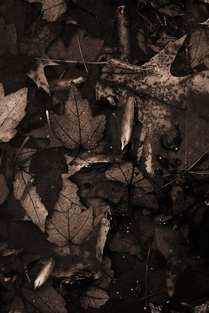

Hawk Watch at Pranker’s Pond
by Tom Sheehan

(for John and Ellen Burns)
Up gray stairs cut against the heart of earth,
taller than promise, shade given over
to hail evening’s climb and gray-ridden rocks,
we mount to the everlasting station
where your scrutiny lingers on this pond.
When I was a boy I fished these rocks
flushed out of this shore, like a miner’s earth
tossed by shovel to make an edge of pond,
here, below you, topography’s station,
charred granite edges, time rolling over
from a long-dead fire, Ice Age hunting earth
and plush haven to put down Pranker’s Pond,
to slam it meteoric among rocks
as if, in hindsight, no other station
could accept tumbling over and over.
One animate god gave you this pond,
watch guard from Christmas Eve to Passover,
all ends of the track up to the station,
all shore, all watering, and sculptured rocks,
all good ministries of this piece of earth;
where big-mouth bass, and pickerel under rocks,
and carp, gathered in flotilla’s station
like dark submarines, lingering at earth,
once lined up in Le Havre, New London’s pond,
waiting for silence to come, and over
their grayed and lichened surfaces the pond
accepts what peace comes, absolute station,
accepting, if by chance, peace under rocks
and all the dread world over, all over.
Nothing is so quiet as quiet earth,
nothing comes knifelike between earth and pond
like erosion, misdeeds, molestation
of waters, herbs, young saplings, Mother Earth,
pieces of Saugus, what you watch over
from that aerie on precipitous rocks.
Nothing moves you do not see, slate of pond,
duck, bluebird, cardinal calling out its mirth,
a dozen crows a starched pine gives over
to the fact of day, sad face of storm clocks,
clouds cascading down sweet immolation.
You, un-winged, un-feathered, are the hawks
who give their eyes to long-established bond,
who see seasons, under scan, recover
in part and whole, the essence of rebirth,
a cursed pond come back from profanation.
 |